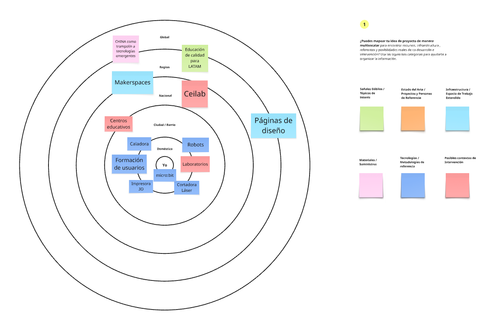
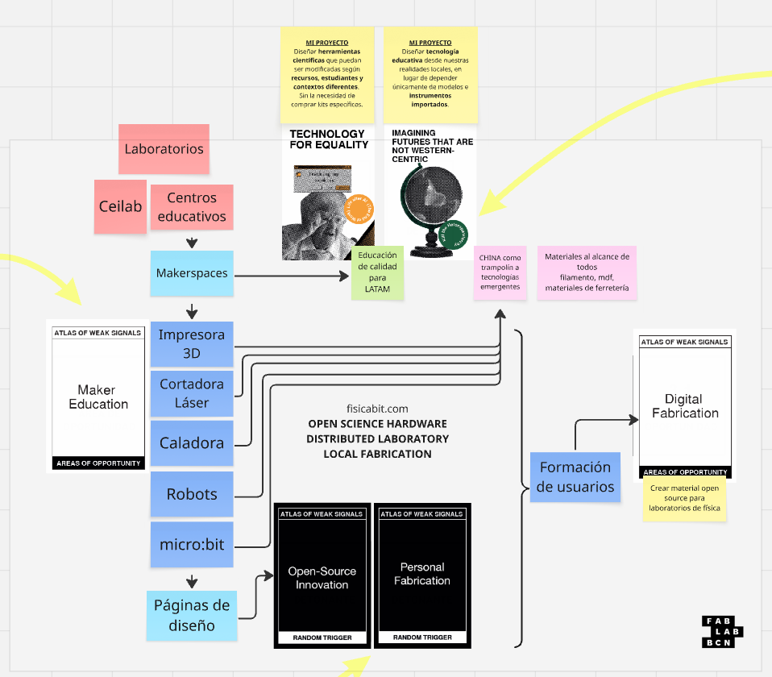
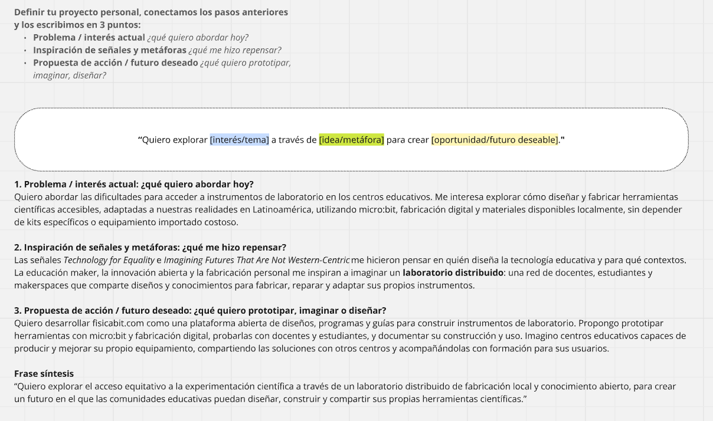

MD01 · Módulo de Diseño: imaginar un laboratorio de física distribuido¶
Brief¶
En este módulo trabajé sobre una pregunta que atraviesa mi práctica docente y el desarrollo de FisicaBit: ¿cómo ampliar el acceso a la experimentación científica sin depender exclusivamente de instrumentos comerciales costosos o de kits importados? La actividad no consistía en fabricar un producto terminado, sino en situar una idea de proyecto dentro de su contexto, reconocer recursos y actores, explorar señales de cambio y pensar qué futuros sería valioso construir.
Quise aprovechar el ejercicio para imaginar una red en la que docentes, estudiantes e instituciones puedan diseñar, fabricar, adaptar, reparar y compartir sus propios instrumentos de laboratorio, combinando micro:bit, sensores, fabricación digital y documentación abierta.
- Usuarios y participantes: docentes, estudiantes, laboratorios y centros educativos, especialmente aquellos con acceso limitado a equipamiento experimental.
- Problema: costo y disponibilidad de instrumentos, dependencia de soluciones cerradas y falta de propuestas abiertas que puedan replicarse y adaptarse a los contextos locales.
- Restricciones y condiciones: distintas realidades económicas e institucionales, disponibilidad variable de materiales, máquinas y conocimientos técnicos, y necesidad de que las propuestas sean accesibles y reproducibles.
- Entregable: mapas de contexto y relaciones, exploración de señales y una formulación escrita del proyecto y del futuro deseado.
- Herramientas: tablero colaborativo Miro, notas adhesivas, mapas de relaciones y tarjetas del Atlas of Weak Signals.
Referencias e inspiración¶
Tomamos como referencia el Atlas of Weak Signals de Fab Lab Barcelona, una herramienta para explorar indicios de cambios que todavía no son dominantes, pero que pueden ayudar a imaginar escenarios futuros y nuevas oportunidades de diseño. Me resultó interesante porque proponía salir de la solución técnica inmediata y pensar en las transformaciones sociales, educativas y productivas con las que podría relacionarse mi proyecto.
El ejercicio proponía incorporar distintas clases de información, identificadas mediante colores: señales o temas de interés, referencias inspiradoras, infraestructura disponible, materiales, tecnologías y posibles contextos de intervención. Esta clasificación fue útil para evitar mirar FisicaBit únicamente como una plataforma o una colección de instrumentos.
La consigna original también está disponible como guía visual de categorías y colores. La dejo como material de consulta, sin incluirla en la galería principal, para dar más protagonismo a los mapas que elaboré durante la actividad.

También quedó como bibliografía del módulo el documento First Person Perspective, que incorporo entre las referencias compartidas. La descripción de las actividades que sigue se basa en mis propios tableros y en la reflexión que escribí al finalizar el ejercicio.
Bocetos¶
Mi primer trabajo fue mapear el proyecto por escalas, empezando por los recursos más próximos y ampliando progresivamente la mirada. En el centro situé mi relación con micro:bit y las herramientas con las que puedo experimentar. Luego aparecieron otras tecnologías y espacios: impresoras 3D, cortadoras láser, caladoras, robots, laboratorios y formación de usuarios.
Al ampliar el mapa aparecieron los centros educativos, Ceibal, los makerspaces y las páginas de diseño, además de cuestiones de alcance regional y global, como el acceso a materiales, el origen de las tecnologías y la necesidad de una educación de calidad en América Latina.

Este mapa me ayudó a reconocer algo importante: para construir instrumentos accesibles no alcanza con conocer la electrónica o fabricar una pieza. También necesito comprender qué recursos existen alrededor, quién puede colaborar, dónde se puede producir y qué conocimientos hace falta compartir.
Iteraciones¶
La siguiente parte del trabajo consistió en pasar de un inventario de recursos a una red de relaciones y oportunidades. En el tablero conecté espacios educativos y makerspaces con tecnologías como micro:bit, impresión 3D y corte láser, y después con formación de usuarios y publicación de diseños.
Dos señales del Atlas me hicieron repensar el sentido del proyecto. Technology for Equality me llevó a preguntarme cómo diseñar herramientas científicas que reduzcan barreras de acceso. Imagining Futures That Are Not Western-Centric abrió otra pregunta: ¿por qué asumir que los instrumentos para enseñar física deben llegar siempre como productos importados y cerrados, en lugar de poder diseñarse y adaptarse desde las realidades de América Latina?
También incorporé Maker Education y Digital Fabrication como áreas de oportunidad, y relacioné Open-Source Innovation y Personal Fabrication con una forma de producción que combina ciencia abierta, conocimiento compartido y fabricación local. La idea comenzó a tomar forma como un laboratorio distribuido, más que como un único producto.

Esta transición fue una de las partes más valiosas: dejé de ver las herramientas de fabricación como elementos aislados y empecé a pensar en la combinación de infraestructura, formación, documentación y colaboración necesaria para que otras personas puedan construir y mejorar instrumentos.
No fue un proceso completamente lineal. Me costó encuadrar una propuesta tan específica de instrumentación para física dentro de las weak signals. Al principio, mi mirada estaba centrada en resolver una necesidad concreta del laboratorio. El ejercicio me exigió ampliar esa mirada y relacionar el proyecto con cambios que trascienden su aplicación inmediata. También reconozco que podría haber considerado otras señales para cuestionar más mis primeras elecciones.
Resultado¶
El cierre del ejercicio fue sintetizar la propuesta en tres dimensiones: el problema que quiero abordar, las señales y metáforas que me hicieron repensarlo, y la acción o futuro que quiero construir.
- Problema actual: las dificultades de acceso a instrumentos de laboratorio en centros educativos, especialmente cuando dependen de equipamiento importado o costoso.
- Inspiración: la equidad tecnológica, los futuros pensados desde contextos no occidentales, la educación maker y el trabajo colaborativo.
- Propuesta de acción: continuar desarrollando FisicaBit como una plataforma abierta que reúna diseños, programas, guías y experiencias para fabricar y utilizar instrumentos de física, probarlos con docentes y estudiantes, y compartir las mejoras.

La frase que resume esta dirección es:
Quiero explorar el acceso equitativo a la experimentación científica a través de un laboratorio distribuido de fabricación local y conocimiento abierto, para crear un futuro en el que las comunidades educativas puedan diseñar, construir y compartir sus propias herramientas científicas.
Avance Pude identificar actores, tecnologías y espacios que pueden formar parte del proyecto, y expresar con mayor claridad qué futuro quiero contribuir a construir con FisicaBit.
Dificultad Me costó inicialmente interpretar las señales débiles desde un proyecto tan específico. No lo resolví como si fuera un ejercicio cerrado: quedó abierta la posibilidad de explorar otras señales y contrastar el mapa con personas e instituciones que puedan participar.
Reflexión¶
Me pareció muy valiosa la propuesta del módulo porque me obligó a mirar más allá del dispositivo que quiero fabricar. En mi trabajo suelo partir de una necesidad bastante concreta: cómo medir una magnitud física, cómo conectar un sensor, cómo desarrollar una experiencia experimental o cómo diseñar una pieza. En esta actividad tuve que preguntarme qué cambios de contexto podrían hacer que esas soluciones tengan mayor sentido y lleguen a más personas.
Las weak signals me ayudaron a reconocer que situaciones que hoy parecen menores pueden indicar transformaciones relevantes para el futuro. Al mismo tiempo, trabajar con ellas no me resultó sencillo. FisicaBit pertenece a un campo bastante específico y, por momentos, me costaba encontrar una relación clara entre algunas señales y lo que quiero desarrollar. Esa dificultad también fue parte del aprendizaje: me permitió revisar mis supuestos y darme cuenta de que podía ampliar el análisis.
El mapa hizo visible que la disponibilidad de una impresora 3D, una cortadora láser o una placa micro:bit no alcanza por sí sola. Si queremos que un laboratorio sea verdaderamente distribuido, hacen falta documentación comprensible, formación, diseños editables, pruebas, intercambio de experiencias y oportunidades para reparar o modificar las herramientas. También es importante pensar en quienes no tienen acceso a estos recursos, para no reproducir nuevas barreras.
Me quedo con una idea que quiero llevar al resto de la especialización: no se trata solamente de fabricar instrumentos más baratos, sino de generar capacidades para que las propias comunidades educativas puedan producir, comprender y mejorar su equipamiento. En esa dirección, FisicaBit puede crecer como un proyecto de ciencia abierta y fabricación local, en el que los desarrollos se prueben con rigor y puedan reproducirse en distintos contextos.
Como próximo paso, me interesa contrastar este mapa con necesidades reales de docentes y centros educativos, definir qué instrumentos conviene prototipar primero y avanzar hacia documentación que permita su fabricación y validación fuera de mi propio laboratorio.
Archivos¶
- Atlas of Weak Signals — Fab Lab Barcelona · referencia de la actividad y herramienta de exploración de futuros.
- first-person-perspective.pdf · bibliografía compartida para el módulo.
- Mapa de contexto (.png) · recursos y actores organizados por escala.
- Mapa de relaciones (.png) · conexiones entre señales, tecnologías y oportunidades.
- Síntesis del proyecto (.png) · formulación del problema, inspiración y futuro deseado.
- Consigna visual (.png) · categorías de trabajo y código de colores.


Atribución y uso de IA¶
La actividad y los mapas se desarrollaron en un tablero colaborativo de Miro en el marco del módulo MD01. El enfoque metodológico y las tarjetas del Atlas of Weak Signals corresponden a Fab Lab Barcelona; las imágenes del tablero aquí utilizadas son registros de mi propia actividad formativa. El documento First Person Perspective se incluye como material bibliográfico del curso, sin atribuirle contenidos que no se analizan en esta entrada.
Utilicé ChatGPT como apoyo para organizar la bitácora, dar continuidad narrativa a los ejercicios y revisar la redacción a partir de los mapas y de mi reflexión original. Los problemas seleccionados, las relaciones propuestas, las decisiones de proyecto y las conclusiones de la actividad corresponden a mi trabajo. Para referenciar el uso de IA en contextos creativos y educativos, dejo el enlace a la etiqueta CCL.